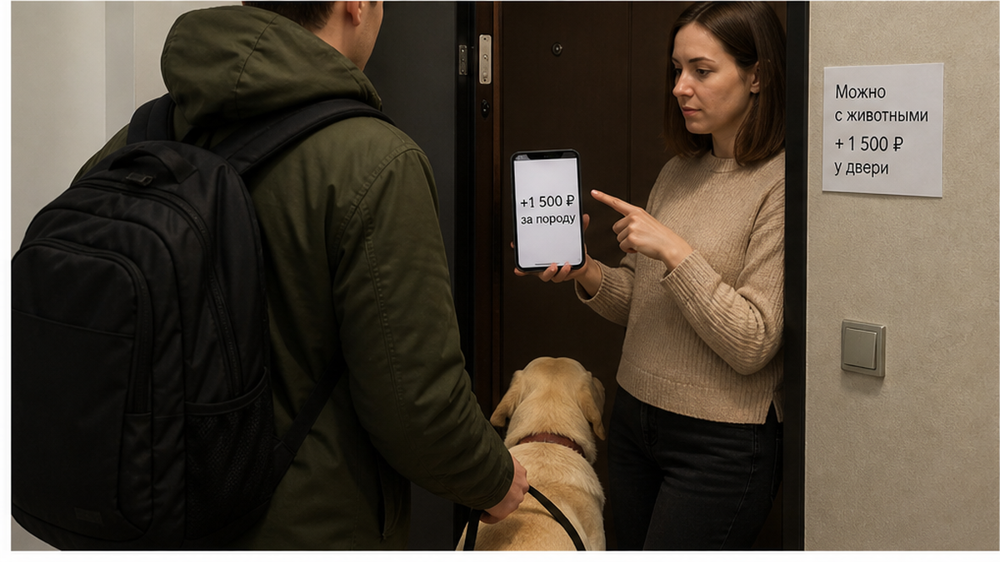
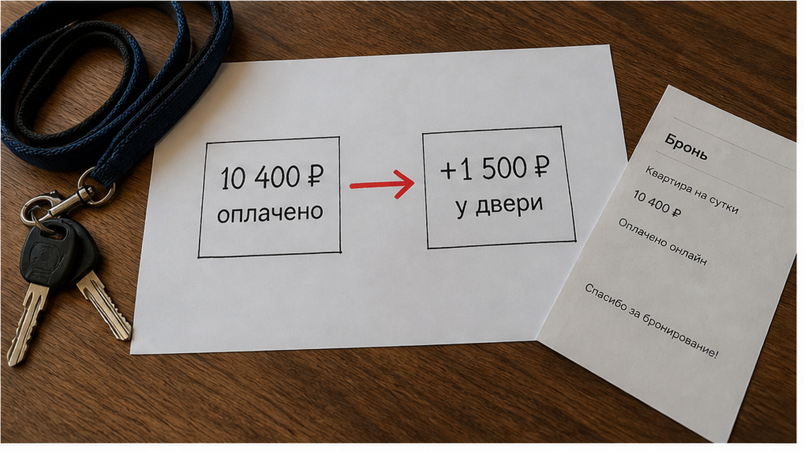

«Лабрадор — крупная порода. Плюс тысяча пятьсот за уборку шерсти. Иначе не заселю.» Пара стоит на площадке с собакой на поводке, рядом сумка и пакет с кормом, деньги за квартиру уже ушли: две ночи по 5 200 ₽, итого 10 400 ₽ переведены заранее. В объявлении стояло «можно с животными». В чате хозяин ответил ровно так: «с собакой можно, без проблем». А у двери выяснилось, что «можно» относилось к кошке и к чему-то мелкому на руках, а тридцать килограммов доброго лабрадора — это отдельная строка и отдельный тариф, о котором до оплаты никто не сказал ни слова. Сломалась не собака. Сломалось слово «можно», за которое человек уже заплатил вперёд и стоит теперь с чемоданом в чужом подъезде.
Я хост посуточной в Тюмени. Это «Добрый дом». Пишу в Telegram · MAX. Такие истории приходят к нам в чат почти каждую неделю — люди ищут квартиры посуточно в Тюмени с животным, читают три слова в объявлении, платят и получают счёт у двери. Разбираю этот случай по шагам, потому что механика везде одна.
В объявлении — галочка «можно с животными». Ни породы, ни веса, ни суммы за клининг. В чате перед бронью пара написала честно: «С нами лабрадор, спокойный, приучен, возим с собой подстилку». Ответ пришёл в одну строку: «с собакой можно, без проблем». Этого им хватило, чтобы перевести 10 400 ₽ и сесть в такси с вокзала.
Дальше — площадка у двери, вечер, собака на коротком поводке, разговор:
— Мы бронировали, оплата прошла. Вот переписка: «с собакой можно».
— Можно. Но у вас лабрадор, это крупная порода. Шерсть по всей квартире, клинингу двойная работа. Полторы тысячи — и заселяю.
— Почему этой суммы не было в цене брони?
— Так это не за квартиру. Это за шерсть.
Вот здесь и лопается иллюзия. Гость думал, что купил ночь с собакой. На самом деле он купил ночь, а собаку ему продали отдельно — у двери, когда деньги уже переведены, чемодан уже в подъезде, а альтернатива — искать другое жильё в незнакомом городе с животным на руках. Полторы тысячи в такой позиции платят почти все. Не потому что согласны. Потому что деваться некуда.

Доплата за уборку после крупной собаки — вещь абсолютно нормальная. Лабрадор линяет, клинингу правда больше работы, и если хост берёт за это 1 000–2 000 ₽, у него есть на то полное право. Вопрос никогда не в сумме. Вопрос в том, когда эту сумму называют.
Не жадность хозяина. Не размер собаки. А порядок: сначала оплата, потом условия. Именно этот порядок и есть поломка. Пока гость не заплатил, он свободен: сравнил три варианта, спросил про породу, выбрал того, кто ответил внятно. После перевода он заперт. И любая новая строчка в цене превращается из предложения в требование.
Ровно та же схема работает и без животных: оплатил за двоих — у двери попросили доплату за третьего. И на выезде она же разворачивается в обратную сторону: перевёл залог, а на выезде сказали «не вернём». Механика одна: условие приходит после денег.

Один вопрос в чате до перевода закрывает всю эту историю:
«Какая порода допускается и какая доплата за животное прописана в объявлении?»
Смотрите не на «да» или «нет». Смотрите на форму ответа.
Внятный хост отвечает цифрами и границами: «до 35 кг, доплата за клининг 1 500 ₽, входит в итог брони, вот сумма к оплате — 11 900 ₽ за две ночи». Всё. Дальше вы решаете спокойно, до такси и до перевода.
Хост, который собирается доить вас у двери, отвечает по-другому. «Договоримся на месте.» «Смотря какая собака.» «Приезжайте, посмотрим.» «Ну если аккуратная, то не проблема.» Это не любезность. Это отложенный счёт. Человек оставляет себе право назначить цену в момент, когда у вас нет выбора.
И третий вариант, самый частый: молчание. Вопрос про породу и доплату задан — в ответ смайлик или «всё ок». Так же ведут себя и с предоплатой: перевели 3 000 предоплатой — и тишина в чате. Если до денег вам не отвечают на прямой вопрос, после денег не ответят тем более.
Честный вопрос, и мне правда интересен ваш ответ. Вы стоите на площадке. Собака на поводке. 10 400 ₽ уже переведены. У двери просят ещё 1 500 ₽ за породу. Вы платите — или разворачиваетесь и ищете другую квартиру на ночь?
Напишите свой вариант нам в Telegram или в MAX — отвечаю лично, разберу вашу ситуацию словами, а не шаблоном. В комментариях под статьёй такие разговоры не работают: там спор, а не помощь.
Мы с животными заселяем. Но не «договоримся на месте».
Порода, вес и доплата за клининг называются до брони и попадают в итоговую сумму. Если у вас лабрадор, овчарка, хаски — вы узнаёте цену с собакой сразу, одним числом, и это число не меняется у двери. Если по конкретной квартире крупная собака не проходит — вам говорят это в чате, а не когда вы уже в подъезде.
И наоборот. Если хост согласовал «с собакой можно, без проблем», а потом на площадке пытается добрать полторы тысячи за породу — Нет. Так не заселяем. Даже если гость готов заплатить. Условие, которое всплывает после перевода, — это не условие, это давление.
Поэтому у нас на входе всё скучно: заранее известная сумма, ясная инструкция, вход без сцен на площадке — как в бесконтактном заселении. Гость приезжает и заходит. Не торгуется в подъезде с собакой на поводке.
Правила по животному — порода, вес, доплата за клининг, залог или его отсутствие — должны быть в объявлении и в чате до предоплаты. Не «на месте». Не «созвонимся». Не «если аккуратная».
Сначала проверка. Потом перевод. Не наоборот.
Проверка занимает четыре минуты в чате. Перевод — четыре секунды. Порядок этих действий и есть вся разница между спокойной ночью и торгом у чужой двери.
Слово «можно» ничего не стоит, пока за ним нет цифры. Цифра до перевода — это договор. Цифра после перевода — это счёт, который вам выставили, потому что вы уже не можете уйти.
Едете в Тюмень с собакой и хотите знать полную сумму до оплаты — спросите заранее. Отвечаю сам, с породой, весом и цифрой в рублях:
Telegram: t.me/Dobriy_dom_72 · MAX: max.ru/id660300569233_biz
Бронирование: добрыйдом-72.рф/booking · Сайт: добрыйдом-72.рф
Телефон: +7 993 574-83-22 · Менеджер: t.me/Dobriy_dom_Tyumen